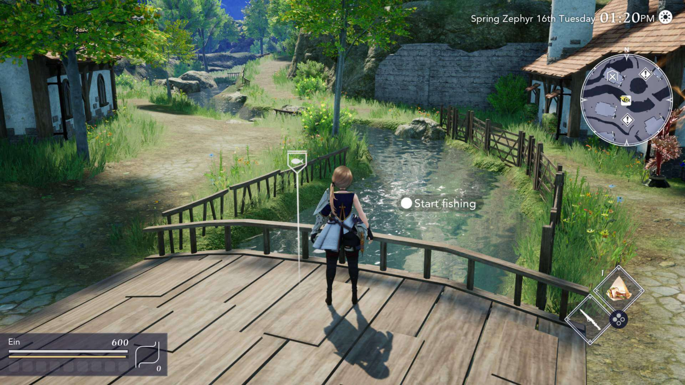

| Fish | Seeds Price Profit Value | Where Caught |
|---|---|---|
| Eversweetfish | A fish that can be caught in any region at any time of year. It is delicious all year round, which is what gives it its name. Great for humans, not so great for the fish. | Everywhere |
| Gazing Carp | A fish with hard, rigid scales. Its beady eyes make it look like it's staring attentively at something in the distance... It's probably not, though. | Everywhere |
| Quotidicrab | An ordinary crab that you can catch anywhere. It suffles around restlessly with one claw up as if it's always looking for something. Its cute little eyes peek out from behind its claws. | Everywhere |
| Azure Sprat | A beautiful ultramarine-colored fish. Its sizable fins glide through the water gracefully as if it's floating in the wind. It only has a pattern around one eye. | Farm, Hingan Canyon, Lethe Village |
| Argentian | A silver-colored fish with black stripes. It is said to bring good luck, especially to those who can catch a lot of them. | Farm, Jade Forest, Lethe Village |
| Aurelian | A fish with a sublime golden sheen. Rumor has it that this fish appears when it is mourning fellow fish that have been caught, but only it knows the truth. | Farm, Jade Forest, Lethe Village |